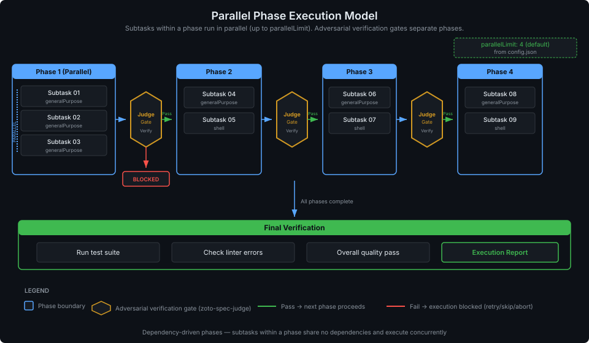

Design Deep-Dive
This page provides a comprehensive technical reference for the Spec System’s architecture, components, and internal workflows. It covers every agent, skill, command, hook, and rule that make up the plugin, along with the spec file formats and execution model.
Table of Contents
- Architecture Overview
- Agents
- Skills
- Commands
- Hooks & Rules
- Configuration System
- Spec File Format
- Execution Model
- Extension Points
1. Architecture Overview
The Spec System is built around a three-agent architecture: one agent creates specs, one executes them, and one independently verifies the work. Each agent is paired with a dedicated skill that defines its workflow, and each skill is exposed to users through a slash command.

The system follows a layered design:
- Commands are the user-facing entry points (
/zoto-spec-create,/zoto-spec-judge,/zoto-spec-execute) - Agents are the execution contexts with domain expertise and model configuration
- Skills define the step-by-step workflows each agent follows
- Spec files are the coordination artifacts that pass state between agents
- Configuration controls naming, paths, limits, and optional extensions
Data flows in one direction: commands invoke agents, agents follow skills, skills produce spec files, and spec files are consumed by downstream agents. The judge agent is deliberately isolated — it always runs in a fresh context with no carryover from prior sessions, ensuring unbiased verification.
2. Agents
Each agent is defined in a Markdown file under
plugins/zoto-spec-system/agents/ with YAML frontmatter specifying
name, model, and description. Agents are
specialist personas — they carry domain expertise, critical rules, and
references to the skills they use.
zoto-spec-generator
Breaks down complex features into well-defined subtasks with clear deliverables, dependency graphs, and execution phases.
When invoked: Spawned by the /zoto-spec-create command. The user triggers it when they want to plan a new feature, refactor, or multi-step initiative.
Capabilities:
- Gathers requirements through interactive clarifying questions (up to 10)
- Spawns
exploresubagents to understand the existing codebase - Constructs dependency graphs and assigns subtasks to execution phases
- Creates the spec index file and all subtask files
- Automatically invokes the judge as a final quality gate before finalizing
Skills used:
- zoto-create-spec — the 8-step guided creation workflow
- zoto-judge-spec — invoked automatically as the final creation step
Critical rules:
- Never edits code files — only creates spec Markdown files in
{specsDir}/ - Always stops for user confirmation at key decision points
- Respects
spec.maxSubtasksfrom configuration - Always invokes judge review before presenting the spec to the user
zoto-spec-executor
Executes engineering specs by spawning subagents for each subtask, tracking progress through dependency phases, coordinating adversarial verification, and producing execution reports.
When invoked: Spawned by the /zoto-spec-execute command when a spec exists with status Ready for Review or by explicit user request.
Capabilities:
- Loads and validates the spec manifest (file existence, agent assignments, dependency ordering)
- Presents execution summaries and gates on user approval
- Spawns the exact subagent listed in the manifest for each subtask — never overrides assignments
- Manages phased execution respecting
spec.parallelLimit(default 4 concurrent subagents) - Coordinates adversarial verification by spawning fresh
zoto-spec-judgeinstances - Runs the project’s full test suite and linter during final verification
- Writes a durable execution report to the spec directory
Available subagents for dispatch:
| Subagent | Type | Use For |
|---|---|---|
generalPurpose |
Task | Implementation, coding, multi-step work |
zoto-spec-judge |
Task | Adversarial verification, spec/repo assessment |
explore |
Task | Codebase exploration, file discovery, search |
shell |
Task | Command execution, git operations, test running |
Critical rules:
- Follows the dependency graph strictly — never starts a subtask before its dependencies are complete
- Updates the index file with progress after each subtask completes
- Runs the full test suite only in the final verification phase, not during parallel execution
- Stops for user review before marking a spec as Completed
zoto-spec-judge
Performs adversarial verification of subtask deliverables and produces structured assessments of repositories and specs. Always runs in a fresh context to avoid bias.
The judge operates in three distinct modes:
Mode 1: Adversarial Verification
Spawned by the executor after each subtask completes. The judge reads the subtask file, inspects every Deliverables Checklist and Definition of Done item against the actual file system, and sets the authoritative checklist state. Its tick marks override the executing agent’s.
Verdicts: Verified Partial Failed
Mode 2: Repository Assessment
Invoked via /zoto-spec-judge with no arguments. Performs a
comprehensive repository-level audit: explores codebase structure, runs
read-only quality checks, and scores six dimensions.
Mode 3: Spec Assessment
Invoked via /zoto-spec-judge with a spec path. Loads the spec
index and all subtask files, verifies codebase assumptions, validates the
Subtask Manifest, audits the dependency graph, and performs risk analysis.
After producing the assessment report, offers to apply recommended
fixes directly to the spec files (index, subtasks, dependency graph)
with user approval.
Scoring rubric (Modes 2 & 3):
| Verdict | Score | Meaning |
|---|---|---|
| Approve | 4.0+ | Ready for execution or healthy repository |
| Conditional | 3.0–3.9 | Address findings before proceeding |
| Reject | < 3.0 | Significant rework needed |
Critical rules:
- Never modifies spec files before presenting the assessment — the assessment must be unbiased
- Never applies fixes without explicit user approval
- Only modifies spec files (index, subtasks, dependency graph) — never application source code
- In Modes 1 and 2, remains read-only — fix application is only available in Mode 3
- Never rubber-stamps — provides genuine critical analysis
- Always runs in a fresh context with no carryover from executing agents
- Always checks the file system directly — does not trust agent reports
Agent Comparison
| Property | zoto-spec-generator | zoto-spec-executor | zoto-spec-judge |
|---|---|---|---|
| Purpose | Create specs | Execute specs | Verify & assess |
| Triggered by | /zoto-spec-create |
/zoto-spec-execute |
/zoto-spec-judge, or spawned by other agents |
| Primary skill | zoto-create-spec | zoto-execute-spec | zoto-judge-spec |
| Writes files? | Spec files only | Index updates, execution report | Assessment reports, checklist updates |
| Modifies code? | Never | Via subagents | Never |
| User interaction | Questions, confirmations | Approval gates | None (background) |
| Runs in fresh context? | No | No | Always |
| Background capable? | No | No | Yes (is_background: true) |
3. Skills
Skills define the step-by-step workflows that agents follow. Each skill is a
SKILL.md file under plugins/zoto-spec-system/skills/
with YAML frontmatter (name, description) and detailed
procedural instructions.
zoto-create-spec
Guided workflow for creating structured engineering specs. The skill defines an 8-step process from requirements gathering through automatic judge review.
The 8-Step Workflow
| Step | Name | Description |
|---|---|---|
| 1 | Gather Requirements | Ask clarifying questions one at a time (up to 10) to understand scope |
| 2 | Explore Codebase | Spawn an explore subagent to identify relevant files, patterns, and conventions |
| 3 | Propose Key Decisions | Present architectural decisions for user confirmation |
| 4 | Determine Dependencies | Build the dependency graph: identify inputs/outputs, map dependencies, assign IDs in dependency order, group into phases, validate for cycles |
| 5 | Assign Subagents | Match each subtask to the appropriate subagent type based on work type |
| 6 | Create Spec Files | Create the spec directory, write the index file and all subtask files |
| 7 | Review & Finalize | Present the complete spec summary to the user for review and approval |
| 8 | Automatic Judge Review | Spawn a fresh zoto-spec-judge to assess the spec; set status based on verdict |
Dependency Graph Construction (Step 4)
The dependency graph is built using a five-part algorithm:
- Identify subtasks and their inputs/outputs
- Map dependencies: if subtask B requires output from subtask A, B depends on A
- Assign IDs in dependency order: lower IDs never depend on higher IDs
- Group into phases: subtasks with no unresolved dependencies form a phase; within a phase, tasks can run in parallel; a new phase starts when all prior-phase tasks are complete
- Validate: no circular dependencies, every dependency target exists, no subtask depends on a higher-numbered ID
File Naming Conventions
- Directory:
{specsDir}/[yyyymmdd]-[feature-name]/ - Index:
spec-[feature-name]-[yyyymmdd].md - Subtask:
subtask-[NN]-[feature]-[subtask-name]-[yyyymmdd].md - Assessment:
zoto-judge-assessment-[feature-name]-[yyyymmdd].md - Execution report:
zoto-execute-report-[feature-name]-[yyyymmdd].md - Dates use
YYYYMMDDformat; IDs are zero-padded two-digit
zoto-judge-spec
Independent assessment workflow for repositories or individual engineering specs. Provides a structured review with scores, findings, and actionable recommendations. For spec assessments, offers to apply recommended fixes directly to spec files after producing the report.
6 Scoring Dimensions
| Dimension | Weight | What It Measures |
|---|---|---|
| Completeness | 25% | All requirements covered, no gaps in deliverables, thorough definition of done |
| Feasibility | 20% | Subtasks are achievable, scope is realistic, no impossible demands |
| Structure | 20% | Dependencies are correct, phases are logical, no circular dependencies |
| Specificity | 15% | Clear objectives, concrete and verifiable deliverables |
| Risk Awareness | 10% | Edge cases considered, potential blockers identified, rollback possible |
| Convention Compliance | 10% | Aligns with the repository’s own established patterns |
Each dimension is scored 1–5:
| Score | Label | Meaning |
|---|---|---|
| 5 | Excellent | No issues found |
| 4 | Good | Minor improvements possible |
| 3 | Adequate | Some gaps but executable |
| 2 | Needs Work | Significant issues — revise before executing |
| 1 | Deficient | Major problems — spec should be reworked |
The overall verdict is the weighted average of all six dimensions: Approve at 4.0+, Conditional at 3.0–3.9, Reject below 3.0.
Report Format
Assessment reports follow a structured template:
# Spec Assessment: [Feature Name]
**Target**: `specs/[directory]/spec-[name]-[yyyymmdd].md`
**Assessed**: [YYYY-MM-DD]
**Verdict**: Approve | Conditional | Reject
## Scores
| Dimension | Score | Notes |
|-----------|-------|-------|
| Completeness | X/5 | [brief note] |
| Feasibility | X/5 | [brief note] |
| Structure | X/5 | [brief note] |
| Specificity | X/5 | [brief note] |
| Risk Awareness | X/5 | [brief note] |
| Convention Compliance | X/5 | [brief note] |
| **Overall** | **X.X/5** | **[verdict]** |
## Findings
### Strengths
- [What the spec does well]
### Issues
| # | Severity | Subtask | Finding | Recommendation |
|---|----------|---------|---------|----------------|
| 1 | HIGH | 03 | Missing dependency | Add dependency |
### Risk Summary
| Risk | Likelihood | Impact | Mitigation |
|------|-----------|--------|------------|
| [risk] | Low/Med/High | Low/Med/High | [suggestion] |
## Recommendation
[Overall assessment and next steps]Applying Fixes
After producing a spec assessment, the judge presents actionable findings and offers to apply recommended fixes directly to the spec files. This is an interactive step — the user must explicitly approve before any changes are made.
Types of fixes the judge can apply:
- Dependency fixes — add missing dependencies in the manifest, subtask metadata, and Mermaid graph; recompute phase assignments
- Deliverable fixes — replace vague deliverables with specific, concrete items
- Missing content — add rollback plans, testing strategies, or implementation notes
- Subtask scope — split oversized subtasks into multiple files and update the manifest
- Manifest/metadata consistency — fix mismatches between the index manifest and subtask file metadata
- Graph corrections — update the Mermaid dependency graph to match the corrected manifest
The judge only modifies spec files (index, subtask files, dependency graph) — never application source code, configuration, or test files. The assessment report is updated to note which fixes were applied.
zoto-execute-spec
Executes an existing engineering spec by coordinating subagents, tracking progress, and verifying completion. The workflow has eight steps with built-in safeguards at each stage.
Manifest Loading (Step 1)
The executor reads the spec index file and parses the Subtask Manifest table. For each row, it verifies the subtask file exists, confirms metadata matches the manifest (subagent, dependencies), and checks that no subtask depends on a higher-numbered ID. If any inconsistency is found, execution stops before it begins.
Phase Execution (Step 3)
Subtasks are executed phase-by-phase. Within a phase, all subtasks have no
dependencies on each other and can run in parallel, up to
spec.parallelLimit (default 4) concurrent subagents. If a phase
has more subtasks than the limit, they are batched. The executor spawns the
exact subagent listed in the manifest — agent assignments are never
overridden.
Each executing agent must:
- Tick each Deliverables Checklist item as it completes the deliverable
- Tick each Definition of Done item as the quality gate is satisfied
- Record files modified and blockers in the Execution Notes section
- Run only targeted tests on files it modified (no global test suite)
Adversarial Verification (Step 4)
After each subtask completes, a fresh zoto-spec-judge
instance independently verifies the work. The judge runs as a
background subagent and its checklist state is authoritative — it can
untick items the executing agent marked done if it cannot confirm them.
Verification updates the index manifest status:
- Verified → status set to
Done - Partial → status set to
Partial, user asked to decide - Failed → status set to
Failed, dependent subtasks blocked
Resume Semantics
If execution is interrupted (e.g., session ends), the executor can resume by:
- Reading the spec index to determine which subtasks are already complete
- Identifying the next incomplete subtask from the dependency graph
- Resuming from that point without re-executing completed subtasks
- Verifying completed subtask deliverables still hold (files exist, no regressions)
Skills ↔ Agents
Each agent has a primary skill, but agents also reference other skills for cross-linking. The relationship is not one-to-one — the generator invokes the judge skill as its final step, and the executor invokes the judge for adversarial verification.
| Skill | Primary Agent | Also Used By |
|---|---|---|
| zoto-create-spec | zoto-spec-generator | — |
| zoto-judge-spec | zoto-spec-judge | zoto-spec-generator (final review step) |
| zoto-execute-spec | zoto-spec-executor | — |
4. Commands
Commands are the user-facing entry points for the Spec System. Each command
is defined in a Markdown file under plugins/zoto-spec-system/commands/
with YAML frontmatter (name, description).
/zoto-spec-create
Generate structured engineering specs for complex features and multi-step initiatives.
/zoto-spec-create # Interactive guided mode
/zoto-spec-create @docs/design.md # Create from a design doc
/zoto-spec-create "add feature X" # Create from a descriptionArgument handling:
- No arguments: Start the interactive workflow — the generator asks clarifying questions
- File reference(s): The generator reads the files as design docs or requirements; may still ask questions
- Text description: The generator uses the description as the feature scope
What happens:
- Spawns a
zoto-spec-generatorsubagent - The generator gathers requirements, explores the codebase, proposes decisions
- Creates spec files in
{specsDir}/[yyyymmdd]-[feature-name]/ - Presents the spec summary for user review
- After approval, spawns
zoto-spec-judgefor automatic quality assessment - Sets spec status to Ready for Review
/zoto-spec-judge
Independently assess the repository or a specific engineering spec.
/zoto-spec-judge # Assess the entire repository
/zoto-spec-judge specs/20260403-feature-name # Assess a spec by directory
/zoto-spec-judge specs/.../spec-name-20260403.md # Assess by index file pathArgument handling:
- No arguments: Repository assessment — audits codebase health, structure, test coverage, documentation, and convention compliance. Report written to
{specsDir}/assessment-repo-[yyyymmdd].md - Directory path: Spec assessment — finds the
spec-*.mdindex automatically. Report written to the spec’s directory - File path: Spec assessment using the specified index file directly
Always spawns a fresh zoto-spec-judge subagent in a new context to avoid bias from prior sessions.
For spec assessments, the judge offers to apply recommended fixes after producing the report. If the user accepts, it modifies spec files (index, subtask files, dependency graph) to address the identified issues and updates the assessment report to note which fixes were applied.
/zoto-spec-execute
Execute an engineering spec with guided subagent coordination, progress tracking, and completion verification.
/zoto-spec-execute # Execute the most recent spec
/zoto-spec-execute specs/20260403-feature-name # Execute a specific spec
/zoto-spec-execute specs/.../spec-name-20260403.md # Execute by index file path
/zoto-spec-execute --resume # Resume interrupted executionSpec discovery:
- No arguments: finds the most recently modified spec directory under
{specsDir}/ - Directory or file path: uses the specified spec directly
--resume: reads the spec index to determine completed subtasks and continues from the next incomplete one
Execution safeguards:
| Safeguard | Behaviour |
|---|---|
| Manifest-driven dispatch | Subagent for each subtask comes from the manifest — never overridden |
| Adversarial verification | Each subtask verified by a fresh zoto-spec-judge agent |
| Dependency enforcement | No subtask starts before its dependencies are complete |
| Failure handling | On failure, stop and ask: retry, skip, or abort |
| Parallel limit | Maximum 4 concurrent subagents per batch (configurable) |
| No global tests mid-execution | Full test suite deferred to final verification |
| Progress persistence | Index updated after each subtask — supports --resume |
| User gates | Approval required before starting and before marking complete |
5. Hooks & Rules
Session Start Hook
The Spec System registers a sessionStart hook via
hooks/hooks.json. When a new Cursor session begins, the hook
script (hooks/zoto-session-start.mjs) runs automatically and
checks for unprocessed items.
When it fires: At the start of every Cursor session, before any user interaction.
What it checks:
- Loads
.zoto-spec-system/config.jsonfrom the repository root - Reads
hooks.sessionStartNudge.enabled— iffalse, exits silently - Resolves
workDir(defaultspecs/current) and counts subdirectories - If the count exceeds
threshold(default 20), emits a nudge message
Nudge behavior:
The nudge message is interpolated from the configured template using
${count} and ${unitOfWork} variables. The default
message is:
{
"additional_context": "You have 25 unprocessed specs. Consider running /zoto-spec-create to organize."
}
The hook communicates via stdout JSON — emitting {} when there
is nothing to report, or {"additional_context": "..."} when the
nudge triggers.
Hook registration (hooks/hooks.json):
{
"$schema": "https://cursor.sh/hooks-schema.json",
"version": 1,
"hooks": {
"sessionStart": [
{
"command": "node hooks/zoto-session-start.mjs",
"description": "Spec System: Check for unprocessed specs and nudge user"
}
]
}
}Integration Rule
The integration rule (rules/zoto-spec-system.mdc) is an
always-applied workspace rule that teaches agents about the
Spec System. It has alwaysApply: true in its frontmatter, meaning
it is injected into every agent’s context automatically.
What it teaches agents:
- The three available commands and their purposes
- When to suggest
/zoto-spec-create(multi-step initiatives, cross-component changes, ambiguous requirements) - How configuration works (
.zoto-spec-system/config.jsonwithunitOfWorkandspecsDir) - How to discover existing specs in the configured
specsDirdirectory - Available extensions (memory system)
6. Configuration System
The Spec System is configured via .zoto-spec-system/config.json
at the repository root. An empty {} is valid — all fields
have sensible defaults.
Every agent and skill reads this file at startup. Configuration values flow through to:
- File paths:
specsDircontrols where spec directories are created;workDircontrols what the session hook monitors - Naming:
unitOfWorkcontrols the term used in user-facing messages - Execution limits:
spec.parallelLimitcontrols concurrent subagents;spec.maxSubtasksguards against overly complex specs - Verification:
spec.adversarialVerificationcontrols whether the judge is mandatory - Hooks:
hooks.sessionStartNudge.*controls the session start nudge behavior - Extensions:
extensions.memory.*enables the optional memory layer
{
"unitOfWork": "spec",
"specsDir": "specs",
"workDir": "specs/current",
"hooks": {
"sessionStartNudge": {
"enabled": true,
"threshold": 20,
"message": "You have ${count} unprocessed ${unitOfWork}s in the working directory."
}
},
"spec": {
"maxSubtasks": 99,
"parallelLimit": 4,
"adversarialVerification": true
},
"extensions": {
"memory": {
"enabled": false,
"plugin": null
}
}
}See the Configuration Reference page for complete documentation of every key, including examples for minimal, team, and full configurations.
7. Spec File Format
A spec is a directory containing Markdown files that serve as coordination artifacts. Specs are ephemeral — they exist to track work in progress and provide an audit trail after completion. They are not runtime knowledge and are not referenced by agents, rules, or skills outside the Spec System.
Directory Layout
specs/
└── 20260403-zoto-spec-system/
├── spec-zoto-spec-system-20260403.md # Index file
├── subtask-01-spec-system-scaffold-20260403.md
├── subtask-02-spec-system-config-20260403.md
├── subtask-03-spec-system-agent-20260403.md
├── ...
├── assessment-zoto-spec-system-20260403.md # Judge assessment
└── execution-report-zoto-spec-system-20260403.md # Execution reportIndex File
The index file (spec-[feature-name]-[yyyymmdd].md) is the primary
coordination document. It contains the status, overview, key decisions,
requirements, and most importantly the Subtask Manifest — the single
source of truth for agent assignments, dependencies, and phase ordering.
# Spec: [Feature Name]
## Status
Draft | Ready for Review | In Progress | Completed
## Overview
[High-level description of the initiative]
## Key Decisions
- Decision 1: [What was decided and why]
- Decision 2: [What was decided and why]
## Requirements
1. [Requirement 1]
2. [Requirement 2]
## Subtask Manifest
| ID | File | Subagent | Dependencies | Phase | Status |
|----|------|----------|-------------|-------|--------|
| 01 | `subtask-01-...-yyyymmdd.md` | generalPurpose | — | 1 | Pending |
| 02 | `subtask-02-...-yyyymmdd.md` | generalPurpose | — | 1 | Pending |
| 03 | `subtask-03-...-yyyymmdd.md` | generalPurpose | 01, 02 | 2 | Pending |
## Subtask Dependency Graph
```mermaid
graph TD
A[subtask-01] --> C[subtask-03]
B[subtask-02] --> C
```
## Execution Order
### Phase 1 (Parallel)
| ID | Subagent | Description |
|----|----------|-------------|
| 01 | generalPurpose | [Description] |
| 02 | generalPurpose | [Description] |
### Phase 2 (after Phase 1)
| ID | Subagent | Description |
|----|----------|-------------|
| 03 | generalPurpose | [Description] |
## Definition of Done
- [ ] All subtasks completed
- [ ] All tests passing
- [ ] No linter errors in modified files
- [ ] Documentation updated as needed
## Execution Notes
[Filled in during/after execution]Subtask File
Each subtask file (subtask-[NN]-[feature]-[name]-[yyyymmdd].md)
contains metadata, objectives, a deliverables checklist, and an execution notes
section that agents fill in during execution.
# Subtask: [Subtask Name]
## Metadata
- **Subtask ID**: 01
- **Feature**: [Feature Name]
- **Assigned Subagent**: generalPurpose
- **Dependencies**: None | [List of subtask IDs]
- **Created**: [YYYYMMDD]
## Objective
[Clear description of what this subtask accomplishes]
## Deliverables Checklist
- [ ] Deliverable 1
- [ ] Deliverable 2
- [ ] Deliverable 3
## Definition of Done
- [ ] Code implemented
- [ ] Tests added for new functionality
- [ ] No linter errors in modified files
## Implementation Notes
[Guidance for the executing agent]
## Testing Strategy
Do NOT trigger global test suites during parallel execution.
Run tests only on directly affected files.
## Execution Notes
[Filled by executing agent and verified by judge]
### Agent Session Info
- Agent: [Not yet assigned]
- Started: [Not yet started]
- Completed: [Not yet completed]
### Work Log
[Agent adds notes during execution]
### Blockers Encountered
[Any blockers or issues]
### Files Modified
[List of files changed]Assessment File
Assessment files are produced by the judge in Modes 2 and 3. They follow the structured report format documented in the zoto-judge-spec skill section, with scores for all six dimensions, an issues table, risk summary, and a final recommendation.
Assessment file locations:
- Repository assessment:
{specsDir}/assessment-repo-[yyyymmdd].md - Spec assessment:
{specsDir}/[spec-directory]/assessment-[feature-name]-[yyyymmdd].md
Execution Report
The execution report is a durable record written by the executor at the end
of a spec execution. It lives in the spec directory as
execution-report-[feature-name]-[yyyymmdd].md.
# Execution Report: [Feature Name]
**Spec**: `spec-[feature-name]-[yyyymmdd].md`
**Started**: [YYYY-MM-DD HH:MM:SS UTC]
**Completed**: [YYYY-MM-DD HH:MM:SS UTC]
**Duration**: [Xm Ys]
**Status**: Completed | Completed with exceptions
## Summary
[1-3 sentence overview of what was accomplished]
## Subtask Results
| ID | Subtask | Subagent | Verification | Files Modified | Notes |
|----|---------|----------|-------------|----------------|-------|
| 01 | [name] | generalPurpose | Verified | [count] | [note] |
## Verification Results
### Adversarial Verification
- Subtasks verified: [N/N]
- Issues found: [count]
- Issues resolved: [count]
### Test Suite
- Status: PASS | FAIL
- Tests run: [count]
### Linter
- Status: CLEAN | N errors
### Quality Audit
- Status: PASS | WARN | FAIL
### Documentation
- Status: Updated | No changes needed | Skipped
## Files Modified (all subtasks combined)
[Deduplicated list of all files]
## Outstanding Items
- [Any items requiring manual follow-up]
## Lessons Learned
[Optional: blockers, unexpected issues, process improvements]8. Execution Model
The execution model is the core runtime behavior of the Spec System. It governs how subtasks are ordered, parallelized, verified, and how failures are handled.

Dependency Graphs and Phase Computation
The dependency graph is the foundation of execution ordering. It is computed
during spec creation (Step 4 of zoto-create-spec) and validated
during execution loading (Step 1 of zoto-execute-spec).
Invariants:
- Lower IDs never depend on higher IDs
- No circular dependencies
- Every dependency target exists in the manifest
- Phase assignments are consistent with dependencies (a subtask’s phase is always greater than all its dependencies’ phases)
Phase computation:
- Subtasks with no dependencies are assigned to Phase 1
- Subtasks whose dependencies are all in earlier phases are assigned to the next phase
- This continues until all subtasks are assigned
- Within a phase, subtasks have no dependencies on each other and can run in parallel
Parallel Execution
The executor spawns subagents for each subtask in a phase concurrently, up to
spec.parallelLimit (default 4). If a phase has
more subtasks than the limit, they are batched: the first N subtasks run, and
when those complete, the next batch begins.
Individual subtasks should only run targeted tests on files they modify. The full project test suite runs only during the final verification phase (Step 5) to avoid interference from concurrent file modifications.
Adversarial Verification
Adversarial verification is the Spec System’s primary quality assurance mechanism. It ensures that every subtask’s deliverables are independently confirmed by an agent that did not perform the work.
Why fresh agents? The verifying judge always runs in a fresh context with no carryover from the executing agent’s session. This prevents confirmation bias — the judge cannot assume something works because it saw the agent write it.
What the judge checks:
- Reads the subtask file’s Deliverables Checklist and Definition of Done
- For each deliverable: verifies files exist, content is correct, code typechecks, tests are valid
- For each DoD item: confirms the quality gate is genuinely satisfied
- Sets the authoritative checklist state — can untick items the executor marked done
- Reports a verdict: Verified, Partial, or Failed
Failure handling:
- Verified: subtask marked as
Done, execution continues - Partial: reported to user who decides to fix and re-verify or accept
- Failed: subtask marked as
Failed, all dependent subtasks are blocked, user is asked how to proceed (retry, skip, or abort)
9. Extension Points
The Spec System is designed to be extended without modifying the core plugin. Extension points allow consuming repositories to customize behavior through configuration.
Memory System
The memory extension provides cross-session learning extraction and recall. When enabled, the executor suggests running the memory plugin’s dream/extract workflow after spec execution completes, and the generator mentions that the memory plugin can capture learnings.
{
"extensions": {
"memory": {
"enabled": true,
"plugin": "zoto-memory"
}
}
}Memory operations are handled entirely by the named plugin — the Spec System agents do not manage memories directly. When the extension is disabled (the default), all memory-related operations are skipped silently.
Custom unitOfWork
The unitOfWork configuration key lets teams use their own
vocabulary for work items. All user-facing messages from agents, skills, and
hooks will use the configured term:
"spec"(default) — “This spec has 5 subtasks”"task"— “This task has 5 subtasks”"story"— “This story has 5 subtasks”"prp"— “This prp has 5 subtasks”
The spec files themselves always use standard terminology internally. Only user-facing messages reflect the configured term.
Custom specsDir
By default, specs are stored under specs/ at the repository root.
Teams can change this to any path relative to the repository root:
{
"specsDir": "docs/engineering/specs",
"workDir": "docs/engineering/specs/inbox"
}
All agents, skills, commands, and hooks resolve {specsDir} from
this configuration value. The workDir should typically be a
subdirectory of specsDir but is not required to be.